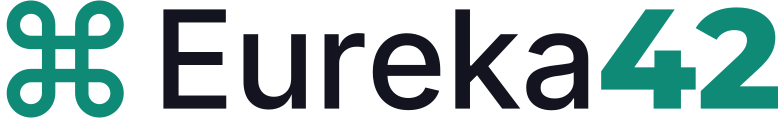
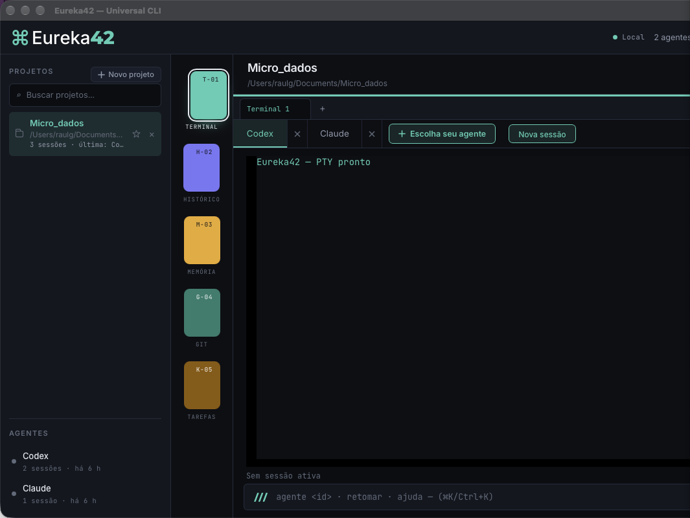

Universal-CLI · apresentação
O Manifesto
Eureka42
Um orquestrador desktop local-first para qualquer CLI de IA — terminal real, memória universal e a sua nuvem.
O nome
o instante da descoberta — o momento em que a ideia deixa de ser intangível
a resposta — a referência de O Guia do Mochileiro das Galáxias, sem rodeios
o atalho — ação direta: menos cliques, mais construção
Princípio 1 / 6
Local-first radical
O núcleo, o banco, a memória e os pacotes ficam no seu computador. Não existe servidor Eureka42, conta própria, telemetria ou sincronização obrigatória. A nuvem é um espelho opcional — e é a sua.
Princípio 2 / 6
Qualquer agente, sem imitação
O app não reproduz CLIs: executa os binários reais que você instalou, preservando TUI, autenticação, MCP, skills e permissões. Surgiu uma CLI nova? Você a registra — e ela passa a funcionar sem esperar atualização nossa.
Princípio 3 / 6
Você é o dono do contexto
Memória universal por projeto, tarefas com proveniência e handoffs em pacotes verificáveis (UAHP 1.0). Trocar de agente transmite um pacote explícito e auditável — nunca o estado oculto de um modelo.
Princípio 4 / 6
Capacidade só com evidência
Cada adaptador declara o que foi validado no binário instalado — retomada de sessão, flags, versões. Nada é presumido pela documentação: o que não foi testado é dito, com a etiqueta NOT_VERIFIED.
Princípio 5 / 6
Sem clichê de IA
Nada de cérebros, robôs ou degradê roxo-azul. Interface escura sobre a grade 42, tipografia Inter/Montserrat/JetBrains Mono e o Baralho de Chips — fichas de cor por função, como um baralho na mesa.
Princípio 6 / 6
Código aberto
Projeto público, decisões documentadas em docs/decisions e estado real registrado em implementation-status — implementado, testado e pendente, sem maquiagem. O histórico de escolhas arquiteturais é parte do produto.

O produto
Universal-CLI
- Terminal PTY real — até 6 abas por projeto, TUI íntegra das CLIs
- Baralho de Chips — Terminal, Histórico, Memória, Git e Tarefas
- Histórico FTS5 — busca instantânea em todas as sessões
- Git somente leitura — nenhum commit ou stash automático
- Retomada nativa — quando a CLI valida, nunca presumida
Engenharia
Três linguagens,
cada uma no seu lugar
PTY, processos, SQLite, criptografia, OAuth e sync — segurança de memória sem GC e binário nativo único.
Componentes, serviços de invoke tipados e o Baralho de Chips — tipagem estática de ponta a ponta.
Esquema e consultas declarativas: busca full-text indexada e transações locais auditáveis.
Tauri 2 · React 19 · Vite · xterm.js · portable-pty · GitHub Actions (macOS / Windows / Linux)
Sincronização
A sua nuvem,
cifrada na sua máquina
Google Drive ou OneDrive com OAuth PKCE e o seu próprio Client ID. Tokens só no chaveiro do SO; pacotes cifrados com AES-256-GCM + Argon2 antes de saírem do disco. Mesmo e-mail em outra máquina = mesmo trabalho.
Comunidade
Aberto no GitHub
Orquestrador desktop local-first para qualquer CLI de IA — terminal PTY real, memória universal, histórico FTS5 e sync cifrado via Google Drive/OneDrive.
Do insight ao código.